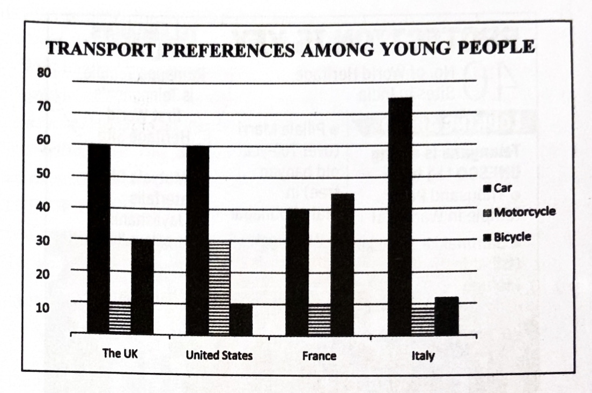
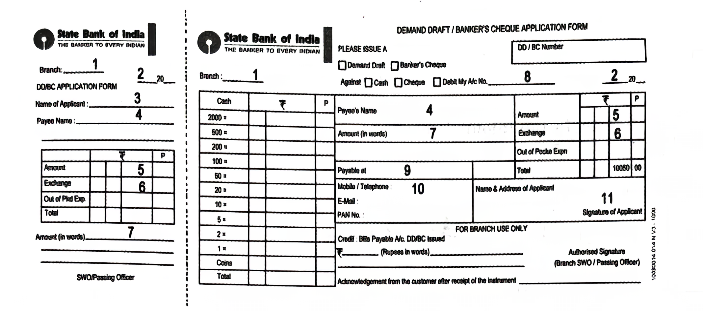
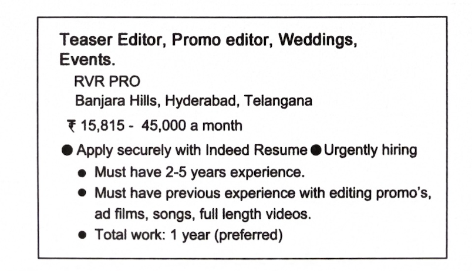

4. Read the following passage and answer ANY FOUR questions given
below.
4 × 1 = 4M
She found it at last. It surely had been made for Jim and no one else. There was no other like it in any of the stores. It was a platinum watch-chain, simple but well made. It was worthy of the watch. As soon as she saw it she decided that it was the right present for Jim. She paid twenty-one dollars for it and hurried home with the 87 cents that remained.
i) What did she find?
ii) What was the impression that she did get after looking at the gift?
iii) What was the chain made of?
iv) How much did she pay to buy the present?
v) How much money remained with her?
vi) What did she buy for Jim?
vii) She paid money in Euros. TRUE OR FALSE.
viii) Write the synonym of the word hastened from the passage.
5. Read the following passage carefully and answer ANY FOUR questions
given after it in a word or in a sentence each.
4 × 1 = 4M
“... ... Ramanujan’s heart was greater: He felt for the downtrodden ... ...” asserted Swami Vivekananda. And Gosti Purna called Ramanujacharya Emperumanar (emberuma:ner – a Dravida word meaning superior to all of us). What made them describe Bhagvad Ramanujacharya thus? How noble Ramanujacharya must be to invite such appreciation! Yes, indeed He was! Regarded as a heavenly star descended down, he grew to be not only a spiritual giant but also an amazing social reformer. He saw divinity in living and inanimate beings. As an epitome of EQUALITY, He threw himself heart and soul into eliminating all barriers. He defied the then rigid customs. He allowed even the downtrodden into temples and to partake in temple services. More than that, He revamped the temple administration thoroughly. He was eager to learn from anyone at any cost. With unmatching perseverance, He walked 100 KMs to Gosti Pura eighteen times to receive the ‘esoteric’ mantra. He was equally committed to teach all. And, He revealed that sacred ‘mantra’ to everyone. He affirmed that hell would be fine for Him, if everyone got liberation. How supreme His sacrifice was! This legendary incarnation of learner, teacher and reformer (three-in-one) finds an astounding embodiment of His image and teachings as the gigantic 216-foot golden-hued STATUE OF EQUALITY – courtesy the vision and commitment of His Holiness Tridandi Chinna Srimannarayana Ramanuja Jeeyar! Shall we assimilate the message? Follow it. Stay blessed. (216 words: 216-foot statue)
i) How did Swami Vivekananda support his claim that Ramanuja’s heart was greater?
ii) Quote the sentence from the passage that proves that Ramanuja’s heart was eager to learn at any cost.
iii) Why did Ramanujacharya say that hell would be fine for Him?
iv) What did Ramanujacharya do to permit all to offer services in temples?
v) Write the synonym of the word embodiment. Find in the passage.
vi) Pick out the idiom from the passage that means with a lot of energy and enthusiasm.
vii) What is the antonym of living that you find in the passage?
viii) The STATUE OF EQUALITY seeks to inspire us to submit ourselves _______ to the service of our Acharya _______ to society and the Supreme Being.
Fill in the blanks with a correlative conjunction. Choosing from the options given below:
a) neither… … nor b) both… … and c) either… … or d) not only… … but also
6. Study the advertisement given below and answer questions given
after it.
4 × 1 = 4M
i) What is Telangana’s first world heritage site?
ii) How many world heritage sites exist in India?
iii) Name the tribal festival held at Mulugu.
iv) What is the tourist site in Jayashankar Bhupalpally?
v) What is Pillalamarri renowned for?
vi) State the town in which the thousand-pillar temple is situated.
vii) Golconda fort is situated in Hyderabad. Write true or false.
viii) What does this advertisement describe?
7. Read the bar graph below and answer questions given after
it.
4 × 1 = 4M

i) What does the bar graph depict?
ii) How many modes of transport are mentioned in the bar graph?
iii) Which is the most preferred mode of transport in the US?
iv) What percentage of people preferred bicycles in France?
v) In Italy which is the least preferred mode of transport?
vi) What percentage of people preferred motorcycle in the UK?
vii) Four modes of transport preferences are presented in the graph. Write true or false.
viii) What percentage of people preferred car in France?
8. Rewrite the following passage/sentence using punctuation marks
wherever necessary.
8 × ½ = 4M
It was a matter of surprise to the outside world that independent India should have appointed women to the highest posts so freely, as members of the cabinet, as governors of provinces, as ambassadors and as leaders of delegations to international conferences, for in an oriental country such as India, women are presumed to be held in subjection and therefore all this seemed to be unnatural.
9. Match the following words in Column-A with their meanings or
definitions in Column-B.
4 × 1 = 4M
| Column A | Column B |
|---|---|
| i) anthology | a) the condition of abnormally low rainfall |
| ii) biography | b) living or occurring at the same time |
| iii) cannibals | c) the state of remaining unmarried |
| iv) celibacy | d) a man eater |
| v) contemporary | e) a story of someone’s life written by another person |
| vi) drought | f) a collection of poems or stories |
10. Fill the blanks in the following sentences with suitable
idiomatic expressions given below. Make necessary changes in the
idioms if needed.
4 × 1 = 4M
get ducks in a row, let the cat out of the bag, working against the
clock,
flogging a dead horse, on cloud nine, bolt from the blue
i) I am really ________ now as the days are running out for the exams.
ii) I can’t hope to do well at my job until I ________.
iii) We are ________. Our present business is making no money. So, let’s do something else.
iv) The results of the recent polls were ________ to many parties.
v) My friend ________ about our surprise birthday party.
vi) Sita is ________ since she got a good job.
11. Make four meaningful sentences based on the verb patterns given
below.
An example is given as a model.
4 × 1 = 4M
| Subject | have/has/had | object |
|---|---|---|
| I | have | a car. |
1) ____________________________
2) ____________________________
3) ____________________________
4) ____________________________
12. Fill in the blanks of the given bank form based on the
information furnished below.
8 × ½ = 4M
You are Murali Mohan. You want to get a Banker’s Cheque for Rs. 6500/-
on Hanumakonda Main Branch of the State Bank of India in favour of ‘Nava
Telangana Publishing House’. The exchange is Rs. 45/-. Fill in the form
given below. You are taking the Banker’s cheque at Jankapur Branch,
Asifabad.
(Note: Use the form given below for the three exercises.)

13. Prepare a Curriculum Vitae / Resume / Bio-data in response to the
following advertisement.
1 × 4 = 4M

14. Write a letter to the Sarpanch and the officer concerned
requesting them to take up necessary measures to improve sanitary
conditions of your village.
1 × 4 = 4M
(OR)
Write a letter thanking your lecturer who has guided you through the Innovative Challenge Competition.
15. Read the following passage and make notes. Add a suitable
title.
1 × 4 = 4M
Many religions existed in India in the Middle Age. The most widely prevalent were, of course, Hinduism and Islam. But there were other religions too, like Buddhism, Jainism and Christianity. The outlook of the people, whether they were Hindus or Muslims, was the same. They believed that the world was a vale of sorrow, and the only way to escape from it and the attainment for true happiness were by turning their hearts away from temptations of the senses and taking refuge in complete surrender to the will of God whose unlimited grace alone could save man. It was, therefore, necessary to place oneself under the control of a spiritual guide and preceptor, and to follow the path of inner discipline which led to the goal of realization of God. Both among the Hindus and the Muslims, there were many orders that saintly preceptors had established. The heads of these orders ministered to the needs of their disciples. Kabir, Nanak and others among the Hindus had founded such orders.
16. Mark the stress for ANY EIGHT of the following words.
8 × ½ = 4M
i) Moment ii) Overtake
iii) Perfect iv) Question
v) Rehearsal
vi) Salute vii) Today
viii) Tomorrow ix) Television
x) Understand
17. You are working in ABCD Company. Ask your employer to enhance
your salary from the next month. Write a DIALOGUE between you and your
employer.
1 × 4 = 4M
(OR)
Write a DIALOGUE between father and son regarding the son’s plans for future.